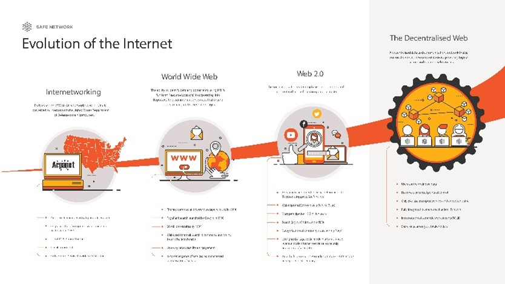

Evolution Of The Internet

Since its creation, the internet has experienced significant development. The following significant events and advancements helped to mold the internet into what it is today:
- ARPANET (1969), the Advanced Research Projects Agency Network (ARPANET) was the precursor to the internet. It connected computers at research institutions and was developed by the U.S. Department of Defense.
- TCP/IP (1982), the Transmission Control Protocol/Internet Protocol (TCP/IP) became the standard for data transmission, allowing different types of computers to communicate with each other.
- World Wide Web (WWW) (1989): Tim Berners-Lee invented the WWW, a system of interlinked hypertext documents accessible via the internet. This marked the beginning of the modern internet as we know it.
- Mosaic Web Browser (1993), The National Center for Supercomputing Applications (NCSA)'s Mosaic web browser popularized the idea of web pages with text, photos, and hyperlinks and provided a user-friendly interface for accessing the internet.
- Commercialization (1990s), the internet shifted from being primarily used by academic and government institutions to a commercial platform. Companies like AOL, Netscape, and Yahoo played a significant role in popularizing the internet among the general public.
- Broadband (2000s), the widespread adoption of broadband internet connections revolutionized internet access, providing faster speeds and enabling the use of multimedia content.
- Social Media (mid-2000s), platforms like Facebook, Twitter, and YouTube transformed the way people connect and share information online, leading to the rise of social media as a dominant force on the internet.
- Mobile Internet (late 2000s), mobile internet usage and the creation of mobile apps increased dramatically with the introduction of smartphones and mobile data networks, which made the internet accessible while on the go.
- Internet of Things (IoT), the IoT refers to the network of interconnected devices and objects that can communicate and exchange data over the internet. This includes smart home devices, wearables, and industrial sensors.
- Cloud Computing, cloud computing allows users to access and store data and run applications over the internet instead of relying on local hardware and infrastructure. This has transformed the way businesses and individuals manage and utilize their data.
By connecting billions of people and devices, the internet has evolved into a global network that facilitates communication, information exchange, e-commerce, entertainment, and much more.